Missão
Promover a descoberta de lugares, experiências e atividades de lazer, incentivando as pessoas a saírem da rotina.
Aqui te conectamos com opotunidades, experiências e lazer.
Agência de marketing de experiências e turismo local
Ver passeiosPromover a descoberta de lugares, experiências e atividades de lazer, incentivando as pessoas a saírem da rotina.
A FourXplore é uma agência de marketing voltada à promoção de passeios, turismo local e experiências acessíveis em Campo Largo/PR e região.
Conectamos o público (B2C: moradores e turistas de 18 a 60 anos) e parceiros comerciais (B2B: restaurantes, bares e pontos turísticos) por meio de conteúdos digitais autênticos e informativos.
Divulgamos opções de passeio para todos os bolsos.
Vídeos, fotos e textos adaptados às redes sociais.
Ajudamos negócios da região a ganhar visibilidade.
Linguagem autêntica e transparente com o público.
Clique em "Ver detalhes" para abrir a janela com mais informações.
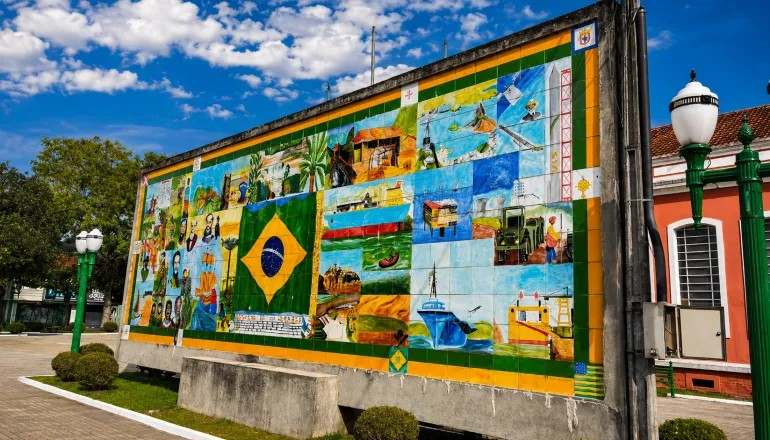
Conheça a tradição da louça e porcelana da cidade.
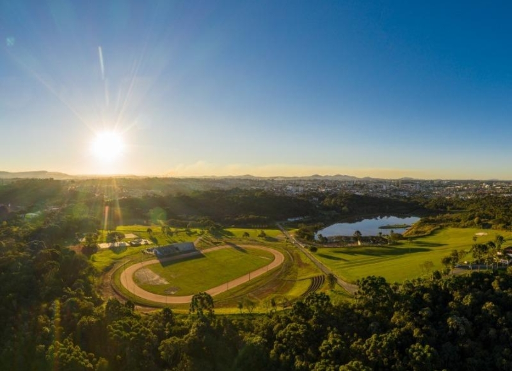
Natureza e lazer ao ar livre para toda a família.
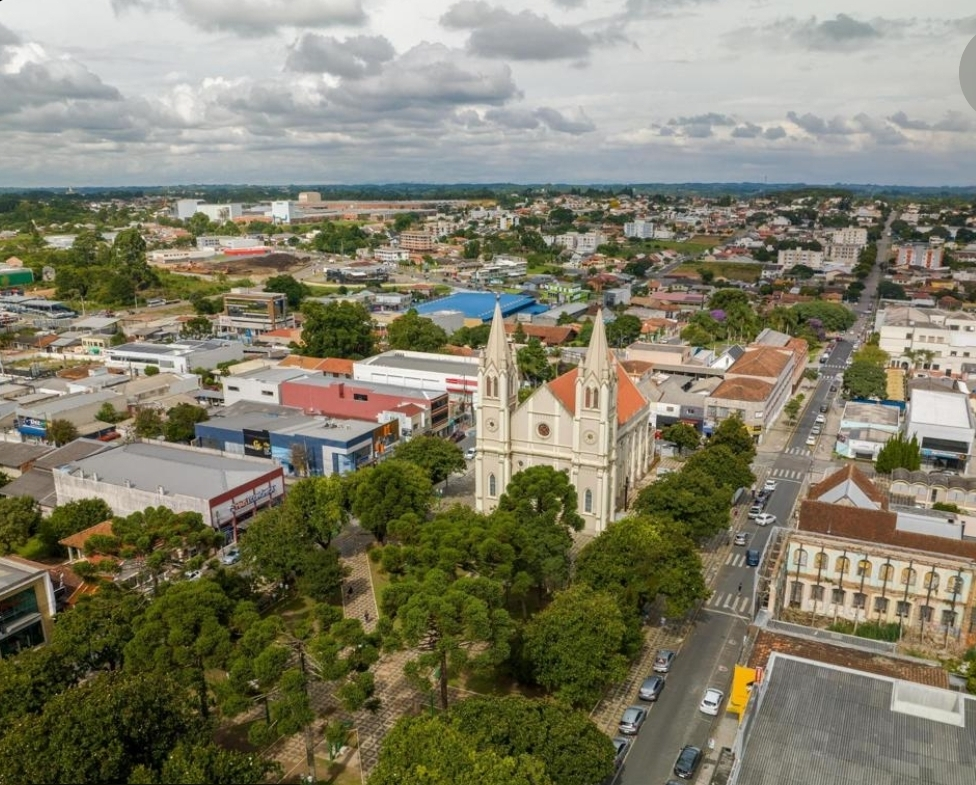
Arquitetura e história no coração da cidade.
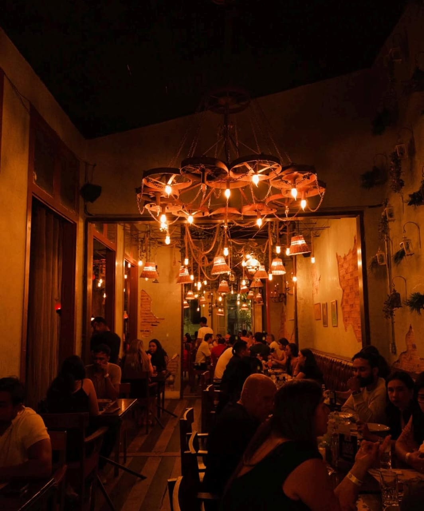
Um cantinho tradicional de Campo Largo para visitar.
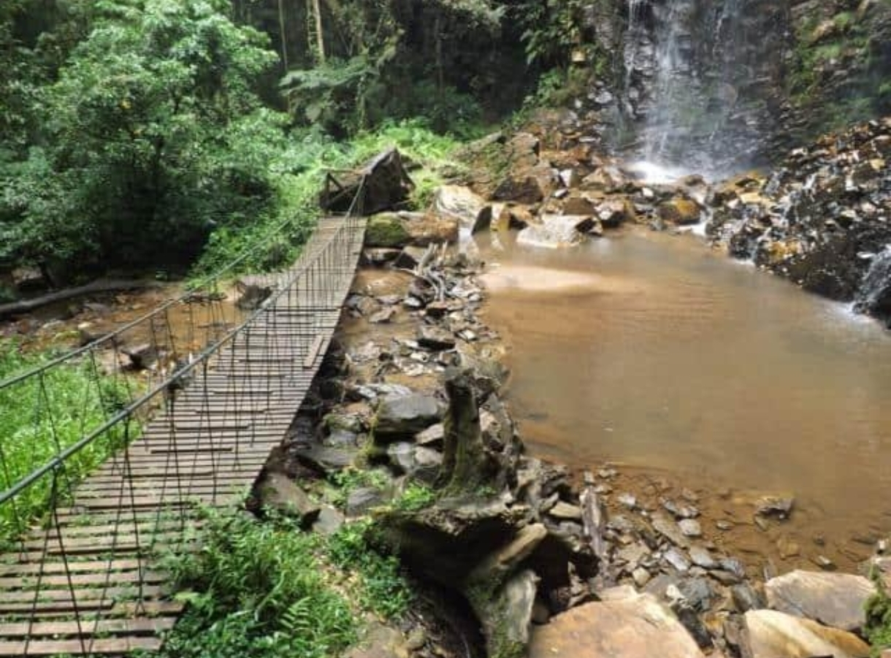
Natureza e paisagem para quem busca sair da rotina.
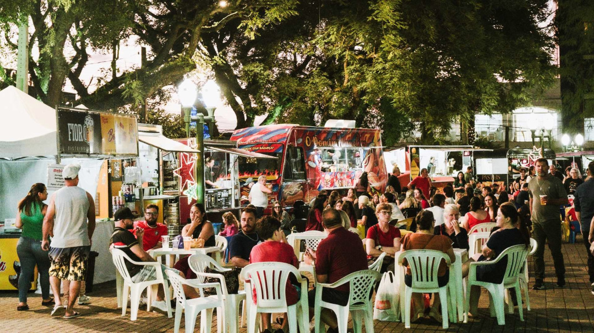
Passeio noturno para curtir a cidade.
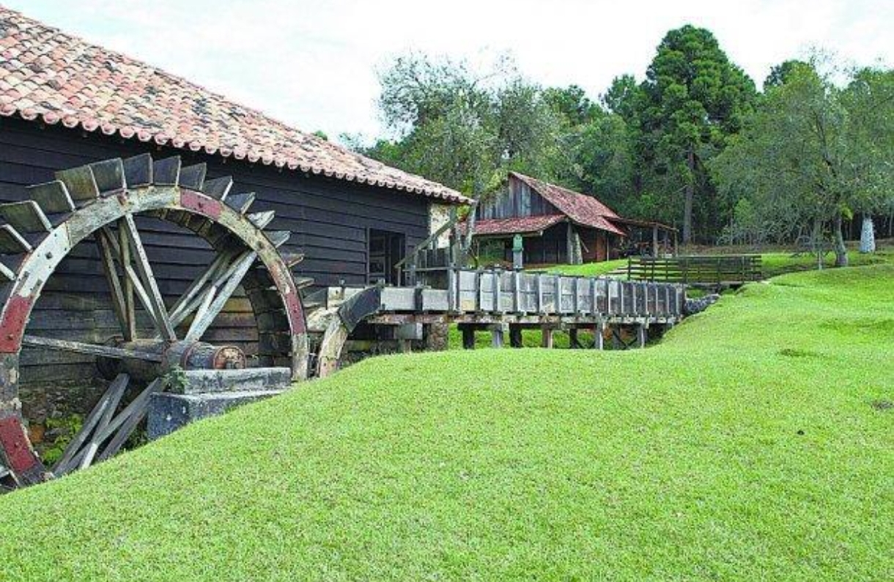
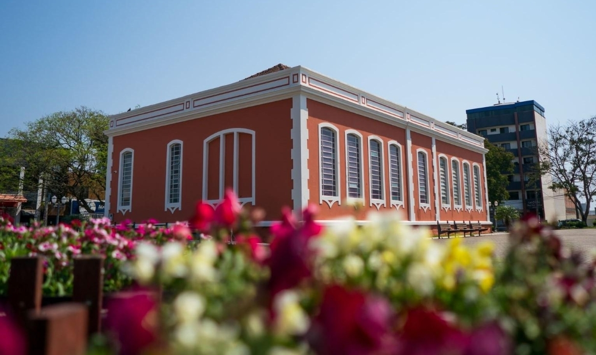
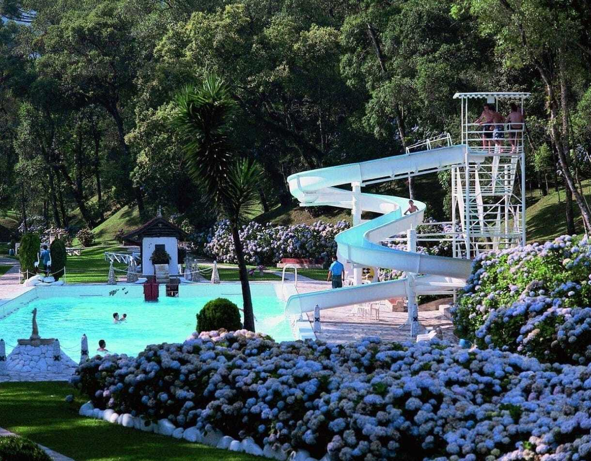
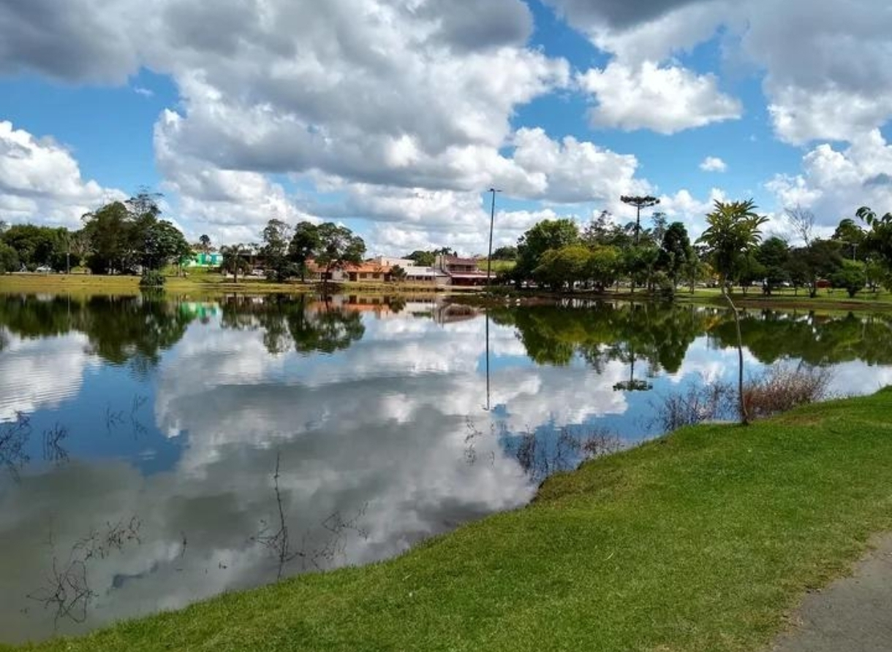
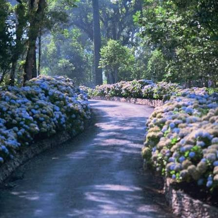
Passeio 1: Rota da Louça
Imagem 1 de 8
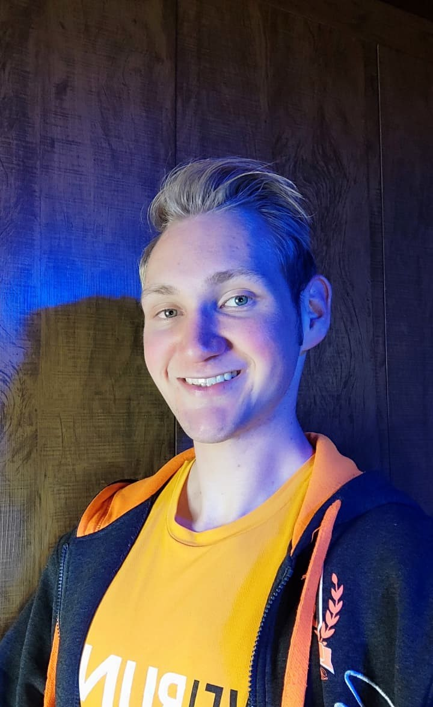
Sócio empreendedor e titular do registro da FourXplore. Gestor de Produção e Operações.
Sócia empreendedora. Gestão de Redes e Relacionamento.
Sócia empreendedora. Gestão de Prazos e Planejamentos.
Sócio empreendedor. Gestor de Tráfego e Financeiro.
Visão: ser referência na divulgação de experiências e locais de lazer.
Valores: lazer e bem-estar, autenticidade, qualidade das informações, apoio aos negócios locais e transparência.
Bares, restaurantes, pontos turísticos, organizadores de eventos e instituições públicas podem contratar divulgação pontual ou planos mensais.
Clique nas abas para alternar o conteúdo.
| Dia | Passeio | Horário | Público | Parceiro |
|---|---|---|---|---|
| Terça | Rota da Louça | 14h | Adultos | Lojas locais |
| Quarta | Centro Histórico | 15h | Todas as idades | Poder público |
| Quinta | Velho Moinho | 16h | Todas as idades | Parceiros locais |
| Sexta | Feira Noturna | 19h | Adultos | Feirantes |
| Sábado | Salto Boa Vista | 9h | Todas as idades | Guias locais |
| Domingo | Parque Newton Püppi | 10h | Famílias | Parque |
Uma agência de marketing que promove passeios, experiências e lazer acessível em Campo Largo/PR.
Bares, restaurantes, pontos turísticos, organizadores de eventos e instituições públicas.
Produção de vídeos, imagens e textos para redes sociais, em conteúdos pontuais ou campanhas contínuas.
Pode ser por demanda (por vídeo) ou por plano mensal, conforme combinado entre as partes.
Inicialmente em Campo Largo e região, com possibilidade de expansão futura.
Pelo formulário da seção Contato, pelas redes sociais ou por e-mail.
Texto